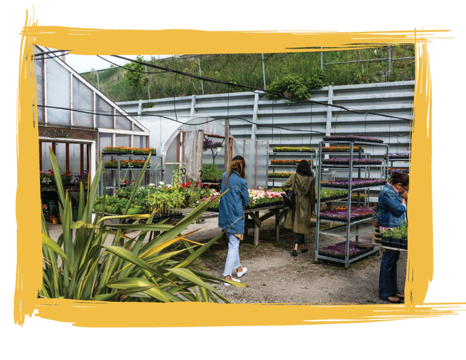

A BIT ABOUT US
SPRING 2014 IS WHERE THIS JOURNEY BEGINS.

Our green thumb emerged while working a 1000 sq ft plot. That summer yielded a bounty that produced litres of tomato sauce and pesto, bushels of beets, carrots, kale and zucchini and the largest watermelon haul North York had ever seen.
In 2016, we began growing gardens in backyards across the city. From Etobicoke to Roncesvalles, Mid-Town and down to the Beaches, lucky homes were filled with natures bounty and pollinators.
The following year, we found the ideal situation - two greenhouses in Scarborough named Gurr Block Greenhouses.
We met Bob Gurr and he told us the story of his family business. Since 1947, his family has operated Gurr Block Greenhouses, from a cement factory to greenhouses with his dad in the mid 70’s. We are happy to continue and uphold the tradition the Gurr’s started, adding our own spin of course. :)
Follow as our story unfolds through our G-LOG - Garden Blog!